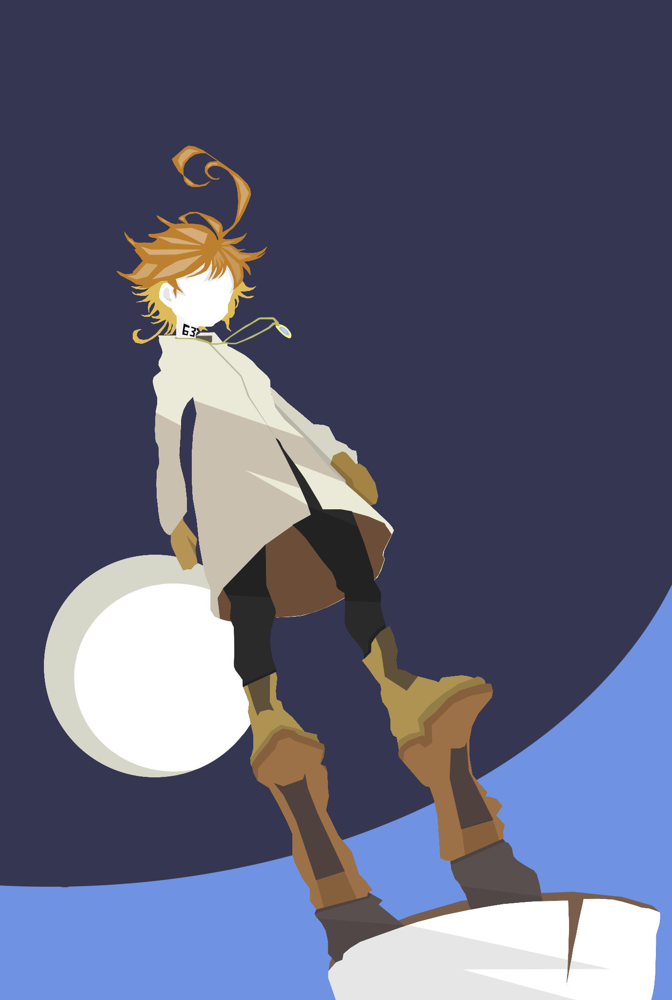
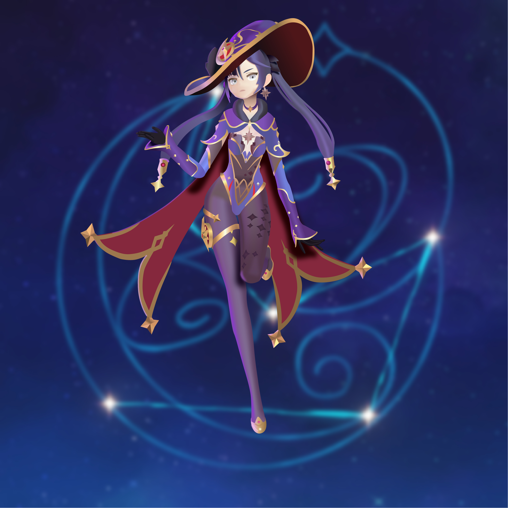

Habilidades
Programas y conocimientos adquiridos
Este es un breve resumen de los programas que uso en la actualidad para trabajar. A su vez, repasaremos que hace cada aplicación.

Photoshop
Estre programa se usa principalmente para edición de imagenes

Illustrator
Esta aplicación se usa para ilustraciones digitales más detalladas
Visual Studio
Este entorno te permite codificar en HTML5 y darle diseño, para sitios web.
Carpeta de trabajos
Producciones personales

63194
Ver más

Mona
Ver más